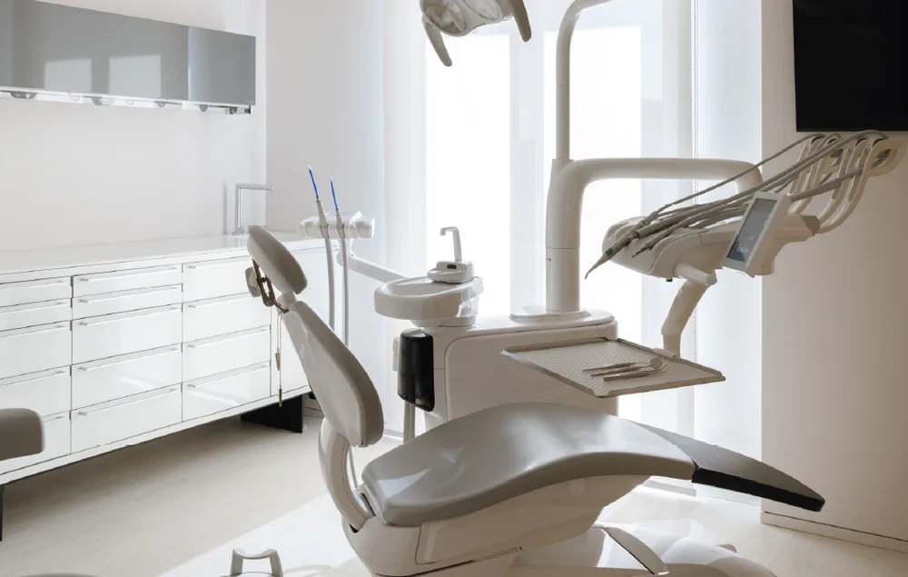
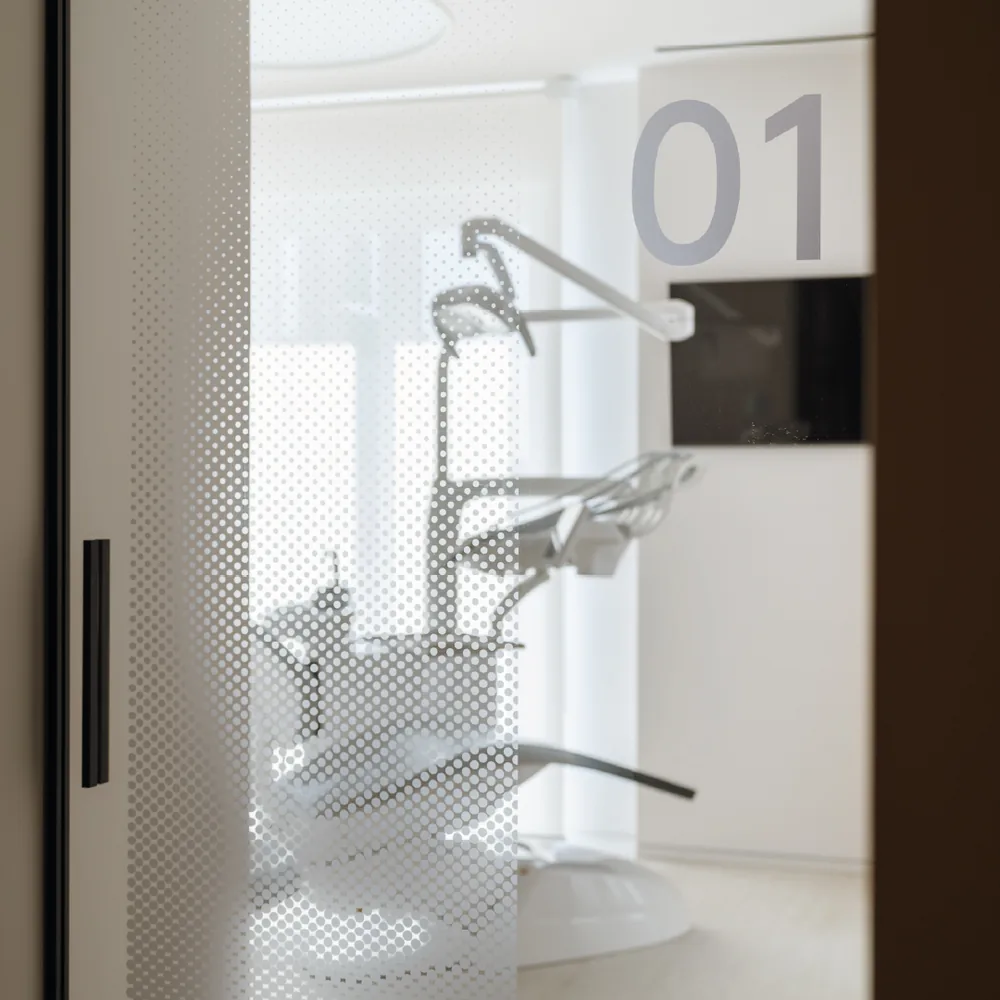

I nostri servizi
Lo Studio Odontoiatrico Ciaramella offre un’ampia gamma di servizi odontoiatrici, garantendo trattamenti di alta qualità grazie all’utilizzo delle più moderne tecnologie e alla costante attenzione alla sicurezza e al benessere dei pazienti.
Odontoiatria estetica
Avere un sorriso bello ed armonioso è una delle richieste più frequenti dei nostri pazienti. È per questo che tutti i nostri piani di trattamento hanno come obiettivo non solo quello di riabilitare dal punto di vista funzionale il paziente ma anche quello di migliorare, ove necessario, l’estetica del sorriso.
Implantologia Computer Guidata
L’implantologia dentale osteointegrata è la soluzione a situazioni di edentulia totale o parziale. Una soluzione efficace che permette di riabilitare il tuo sorriso non solo esteticamente ma anche dal punto di vista funzionale. Con la progettazione digitale inoltre l’implantologia è meno invasiva e più affidabile e sicura.
Implantologia a carico immediato
Le moderne tecniche di implantologia permettono l’inserimento di uno o più impianti con subito uno o più denti.
Conservativa ed Endodonzia
La cura delle carie è un procedimento fondamentale per preservare i nostri denti.
Sbiancamento dentale
Le nuove tecniche di sbiancamento dentale permettono di migliorare l’estetica del tuo sorriso in maniera sicura e poco invasiva. Vieni a scoprire in studio le varie tipologia di sbiancamento professionale esistenti, alla poltrona oppure domiciliare con mascherine personalizzate.
Faccette dentali (veneers)
Chi non ha mai sognato di avere un sorriso “hollywoodiano”? Le faccette permettono di ottenere risultati estetici notevoli con un sacrificio minimo di sostanza dentaria.
Ortodonzia tradizionale ed invisibile
Grazie alla nuove tecniche nel campo dell’ortodonzia si possono oggi ottenere ottimi risultati utilizzando tecniche che prevedono l’utilizzo di apparecchi trasparenti per allineare i denti e correggere le malocclusioni.
Odontoiatria Pediatrica ed ortodonzia intercettiva
La cura dei denti in età pediatrica è fondamentale per prevenire problemi odontoiatrici gravi in età adulta, intercettare tempestivamente le problematiche di malocclusione ed intervenire in tutte le situazioni di pericolo della salute orale che coinvolgono la dentatura decidua e mista.
Protesi fissa e mobile
Le tecniche per ripristinare uno o più denti mancanti sono molteplici. Grazie ad una attenta pianificazione si possono risolvere le problematiche del paziente con un piano di trattamento mirato che tenga in considerazioni le esigenze estetiche, funzionali ed economiche del paziente.
Rigenerazione Ossea Guidata (GBR)
Ti hanno detto che hai poco osso per fare impianti? Spesso grazie all’uso di tecniche di rigenerazione ossea è possibile ripristinare una quota ossea adeguata per l’inserimento degli impianti. L’uso di riempitivi ossei, membrane e tecniche chirurgiche quali il rialzo di seno mascellare per via crestale o laterale consentono di inserire impianti anche dove vi è una scarsa quota di osso residuo.
Medicina Estetica del viso
Oltre all’estetica dei denti nella nostra struttura ci prendiamo cura anche dell’estetica del volto. Contattaci per avere maggiori informazioni sui trattamenti che effettuiamo come ad esempio filler labbra, Rinofiller, tossina botulinica (botox).
Igiene dentale, prevenzione
Effettuare una seduta di igiene ed un controllo ogni sei mesi è una pratica fondamentale per mantenere una buona salute orale ed intercettare in maniera tempestiva problemi quali carie o infezioni ai denti od alle gengive. Grazie alla presenza in studio della tecnologia soft mode inoltre le sedute di igiene orale e ablazione del tartaro sono comode e senza dolore.
Cura della Parodontite
La parodontite, quella che un tempo veniva chiamata piorrea, è un nemico spesso asintomatico, che può mettere in pericolo i nostri denti. Nel nostro studio vengono predisposti protocolli ad hoc per affrontare e risolvere le problematiche legate ai tessuti che circondano i denti, osso e gengive. Se noti denti allungati o che si muovono, sensibilità dentale e/o sanguinamento gengivale vieni a fare un controllo, le tue gengive potrebbero aver bisogno di un trattamento parodontale.
Gnatologia e trattamento delle parafunzioni
La presenza di parafunzioni quali ad esempio digrignamento e serramento possono danneggiare notevolmente gli elementi dentari. La loro diagnosi è fondamentale per mettere in sicurezza i denti con l’uso di apparecchi come i bite in resina oppure tramite l’utilizzo di altri presidi come la tossina botulinica.